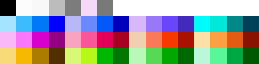

A weird set of limitations i set for myself when creating Ardron Universe.
First you must understand ...well For the youngins. What the NES *is*
If you already know what the NES is, and its limitations. Click the button.
The NES?
The NES is the Nintendo Entertainment System, a game console released by Nintendo in the 1980s.
And compared to modern hardware,
this thing is a fucking potato.
It had an 8-bit CPU,
about 2 KB of general-purpose RAM,
extremely limited graphics hardware,
and game cartridges that were often measured in kilobytes... not gigabytes.
Developers couldn't just make whatever they wanted and throw more hardware at the problem.
Every sprite, tile, color, sound, and byte of memory mattered.
Those limitations are important,
because NES+ starts with the question:
“What if I made Ardron Universe games while deliberately obeying limitations similar to an NES?”
Except...
The + is where I start cheating.
NES Limitations
If the information above didn't give you an idea of its limitations...
The average modern gaming PC,
has enough RAM to hold the working memory of millions of NES consoles simultaneously.
In raw clock speed alone,
a modern multicore CPU operates on the scale of tens of thousands
of NES CPU clocks at once
and that's before accounting for the fact that modern CPUs accomplish vastly more per clock.
So when I say the NES was limited...
I mean LIMITED.
------------------------------------------------------------------------------------------
You see all these beautiful colors and shit? Yeah. The NES can't do that.
You see this block of fuck?

That is every possible color you can have on the NES.
No inbetweens No lights. No darks.
It gets worse.
You can't even USE all of them.
You get 4.
4 per "sprite"
Oh... And "transparant" counts as a color. so if you want transparancy? Technically 3.
Go fuck yourself.
------------------------------------------------------------------------------------------
What is a "sprite" you might ask?
A sprite is basically a single image, the system can move around on screen.
A character? A single sprite.
Enemies? sprites
Bullets,Fireballs, Effects? Alllllll sprites.
A single sprite on NES is "typically" limited to a 8 pixel by 8 pixel image.
eah. This bitch is 16 pixels by 16 pixels.
It gets worse.
This bitch is 16x32
The point is...
You couldn't just make something 15x30 or 9x12 nah.
It took up 8x8.
and you used the space to the best of your ability.
And you're probably thinking "well i'll just make a lot of sprites then?"
WRONG!
You can have a max of 64 sprites being produced at a time.
And this fat fuckin plumber is taking up 8 already in his big form.
You still have a whole level, enemies, score, coin count, all that to go.
------------------------------------------------------------------------------------------
The NES was magic honestly.
I would get into audio(i'll explain that later), but i think its time for the main attraction.
The fuck is NES+?
NES... Plus?
Remember that cute little block of fuck? Mines worse.
You see this, and the less colors, and go "... plus?"
Yes. First off, explination.
RGB + CMYK
and then their opposites. (andsomeothercolorsistoleshutup)
Cool. Ok.
BUT with the + addition, "Brightness" is now available to play with.
You can take any one of those colors, and adjust its brightness from 255 to 0.
That's all allowed.
BUT(T) Once you pick a color+brightness. Thats one of your choices.
You can't pick purple at 75% brightness, and then purple again at 50% brightness,
Nope.
Thats 2 colors of a sprite.
Still have to choose wisely.
------------------------------------------------------------------------------------------
Another addition.
You're allowed to have 8 colors per sprite + transparancy.
Transparancy doesn't count against you.
SO.
Shit like this is legal.
It's a little janky, but I didn't want to create 4 sprites, and remember.
Transparancy is free. so. technically 9 colors allowed.
------------------------------------------------------------------------------------------
NOW as for not wanting to create 4 sprites, there is a reason.
Where as the NES has a sprite limit of 64. thats cool,
We use 1920x1080 screens in this year (ususally)
So I have to increase the sprite limit, and increase the "8x8 pixel = sprite" size limit.
It's either that or do what Blastphemous did. Smol screen resolution, blown up to 1920x1080.
Nah. i'd rather do the increase in pre-production rather than making the engine do it.
SO.
A typical "sprite" is 32x32. I just use extra big pixels.
It will be a *little* smaller.
uh.
Here he is btw :D and let me say. This is a concept.
:D look at that lil guy
That's Child Freedin.
He uh... Doesn't follow the NES Plus rules, but its a concept for a paper doll.
so... It will.
For a better look. I booted up OldMario In 1080p
and got some comparison sizes for you(andforme).
Adult freedin will be bigger >.> so.
BUT ANYWAYS. due to the...nature of how Ardron Universe will go...specially with paper dolls and what not...
64 sprites on screen? NAH
192 sprites on screen 😤 suck it. Cause we do things in 3's here.
------------------------------------------------------------------------------------------
NOW LIKE I SAID... Let's get into Audio...
So... This is FamiStudio.
If you peek into the top left.
There is.
• Square 1
• Square 2
• Triangle
• Noise
• DPCM
That's it. You get 5 "instruments" 🤨
Square 1 and 2 are basically the melody/lead
Triangle is the "bass". as its the lowest sounding note. so 🤷
And noise is usually used for Drums...snares and hihats and such.
DPCM is...fuckin confusing.
It takes a sound sample and can play it back at different rates,
which changes the pitch basically. idk. i don't fuck with it.
You cannot really do chords with FamiStudio...
Well. You can. But it comes at a cost.
If you try to make 2 notes take up the same space in the same "instrument",
one will just overwrite the other.
So if you want 2 notes playing at the same time, you need to use 2 different "instruments".
You could use Square 1 for one note and Square 2 for another to make a chord...
But congratulations. You just used 2 of your 5 "instruments" to make ONE chord. 🤨
So most games use Square 1 and Square 2 for different parts of the song instead, and get creative when they want something to sound like a chord.
It's very primitive, but the things people did with it are pretty amazing.
Go listen to NES castlevania music... Try to spot wtf is goin on.
---
ANYWAYS now for the "Plus" part.
The NES can't... quite do more than that honestly. It's pretyt limited.
And once we get to SNES. we go to full blown fuckin MIDI instruments and such, and it gets even more wild.
BUT for Ardron Universe. we "Plus" it... by Playing 2 Tracks.
A track can have all 5 channels. (ahem) notes, and save that as a mp3 or whatever.
Then I create another track with that one open in another window.
I want a chord? I have to line that bitch up.
Then in game I make both tracks play at the same time for more DEPTH.
Closing Words
So it's not quite SNES and its more than NES.
...
So NES + is born.
🤷 One could ask.
"Why the fuck are you limiting yourself?"
Kid... The best things in the world came from limitations.
You think the human race wouldve gotten where it had if not for technological limitations, and figuring out ways to go further?
This is a homage to the NES, and everything great it did.
It was the console that accelerated gaming to where it is.
No one knows what the fuck the Sega Master System is. People cared about the Genesis.
NES took the 8-bit gaming scene by the balls.
and I intend to honor that, While meeting the inbetween 😃
Toodles!... I never say that.